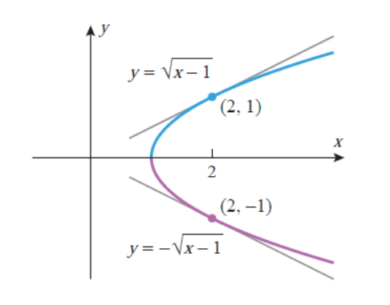
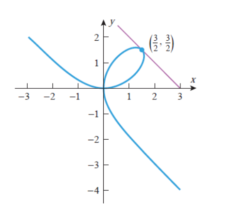
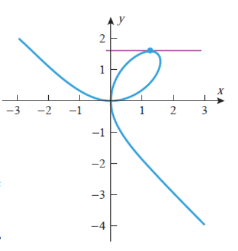

Овде ќе ја изведеме формулата за извод на композиција `f@g` преку изводите на `f` и `g`. Оваа формула ќе ни овозможи диференцирање на сложени функции со помош на познати изводи на поедноставни функции.
Експлицитно и имплицитно дефинирани функции
За равенството од облик `y = f(x)` велиме дека eксплицитно ја дефинира y како функција од `x` бидејќи променливата `y` се појавува сама на едната страна од равенството и не се појавува на другата страна од равенството.
Меѓутоа, понекогаш функциите се дефинирани со равенството во кое на едната страна ги има и `y` и `x`; на пример, равенството
`yx + y + 1 = x`
не е од облик `y = f(x)`. Велиме дека функцијата ја дефинира `y` имплицитно како функција од `x`.
Во случајов, функцијата можеме да го изразиме `y` како функција од `x` во облик
`y = (x -1)/(x +1)`
Равенка по `x` и `y` може имплицитно да дефинира повеќе од една функција од `x`. Ова е случај кога за графикот на равенката не важи тестот со вертикална права, односно кога не е график на функција од `x`.
На пример, ако ја решиме равенката на кружницата
` x^2 + y^2 = 1`
по `y` преку `x`, добиваме `y = +-sqrt(1-x^2)` што значи дека со `x^2 +y^2 = 1` се дефинирани две функции:
`f_1(x) = +sqrt(1-x^2)` и `f_2(x) = -sqrt(1 - x^2)`
Дефиниција
За дадено равенка по `x` и `y` велиме дека дефинира функција `f` имплицитно ако графикот на `y = f(x)` се совпаѓа со дел од графикот на равенката.
Така, на пример, равенката `x^2 + y^2 = 1` ги дефинира функциите
`f_1(x) = +sqrt(1-x^2)` и `f_2(x) = -sqrt(1 - x^2)`
имплицитно, бидејќи графиците на овие функции се содржат во графикот на кружницата `x^2 + y^2 = 1.
Но, понекогаш е тешко или невозможно да се реши равенка по `x` и `y` преку `x`.
На пример, равенката
`sin(xy) = 3xy`
не може да се реши по `y` преку `x` со било кој елементарен метод.
Според тоа, иако дадена равенка по `x` и `y` може да дефинира една или повеќе функции од `x`, може да биде непрактично или невозможно да се најде експлицитна формула за тие функции.
Во општ случај, за да се диференцира функција дефинирана имплицитно, не е потребно да се реши равенката по `y` преку `x`. За илустрација да ја разгледаме равенката
`xy =1`
Еден начин да се најде `dy/dx` е да се презапише равенката во облик
`y =1/x`
од каде што следува дека `dy/dx = -1/x^2`
Друг начин да се најде изводот е да се диференцираат двете страни на
`xy =1`
сметајќи ја `y` за диференцијабилна функција од `x`. Со овој пристап добиваме
`d/dx[xy] = d/dx[1]`
`d/dx[x]*y + x* d/dx[y] = 0`
`y + x* dy/dx = 0`
`dy/dx = -y/x`
Ако во последниот израз замениме `y = 1/x`, добиваме
`dy/dx = -1/x^2`
Овој метод за добивање на извод на имплицитно дефинирана функција, се нарекува имплицитно диференцирање.
Пример 10. Со помош на имплицитно диференцирање, да се најде `dy/dx` ако
`5y^2 + siny = x^2`
Решение. Со диференцирање по `x` на двете страни на `5y^2 + siny = x^2`, добиваме
`d/dx[5y^2 + siny] = d/dx[x^2]`
`5d/dx[y^2] + d/dy[siny]= d/dx[x^2]`
`5(2y(dy)/(dx)) + cosy(dy)/(dx) = 2x`
`(10y + cosy)(dy)/(dx) = 2x`
`(dy)/(dx) = (2x)/(10y + cosy)`
Пример 11. Со помош на имплицитно диференцирање, да се најде `(d^2y)/(d^2x)` ако
`4x^2 - 2y^2 = 9`
Решение. Со диференцирање по `x` на двете страни на `4x^2 - 2y^2 = 9`, добиваме
`8x - 4y(dy)/(dx) = 0`
`(dy)/(dx) = (8x)/(4y) = (2x)/y`
Со имплицитно диференцирање на последното равенство, добиваме
`(d^2y)/(d^2x) = ((2x)/y)^' = (2y - 2x(dy)/(dx))/(y^2) = (2y - 2x(2x)/y)/(y^2) = (2y^2 - 4x)/(y^3)`
`= -9/y^3`
Пример 12. Да се најде коефициентот на правец на тангентата на кривата `y^2 − x + 1 = 0` во точките `(2,−1)` и `(2, 1)`.
`4x^2 - 2y^2 = 9`
Решение. Може да ја решиме равенката по `y` преку `x`, и потоа да го пресметаме изводот на во `(2, 1)` и изводот на во `(2,−1)`.
Сепак, имплицитното диференцирање е поефикасно бидејќи може да се употреби за коефициентот на правец на двете тангенти.
Со имплицитно диференцирање добиваме
`(d)/(dx)[y^2 - x + 1] = d/dx[0]`
`2y(dy)/(dx) - 1 = 0`
`2y(dy)/(dx) - 1 = 0`
`(dy)/(dx) = 1/(2y)`
Со замена на вредностите на `x` и `y`, за коефициентите на правци на тангентите на кривата во овие точки се
`(dy)/(dx) |_[((2, -1))] = -1/2` и `(dy)/(dx) |_[((2, 1))] = 1/2`

Пример 13. а. Со имплицитно диференцирање, да се најде најди `dy/dx` за
Декартовиот лист `x^3 + y^3 = 3xy`.
б. Најди ја равенката на тангентата на Декартовиот лист во точката `(3/2,3/2)`.
в. Во кои точки од првиот квадрант тангента на Декартовиот лист е хоризонтална?
Решение а. Со имплицитно диференцирање добиваме
`d/dx[x^3 + y^3] = d/dx[3xy]`
`3x^2 + 3y^2(dy/dx) = 3y + 3x(dy)/(dx)`
`x^2 + y^2(dy/dx) = y + x(dy)/(dx)`
`(y^2 - x)(dy/dx) = y - x^2`
`dy/dx = (y - x^2)/(y^2 - x)`
Решение б. Во точката `(3/2, 3/2)`, `x = 3/2` и `y = 3/2`, па коефициентот на правец `m_(tng)` на тангентата во оваа точка е:
`(dy)/(dx) |_[(3/2)(3/2)] = (y-x^2)/(y^2-x) = ((3/2) -(3/2)^2)/((3/2)^2 - (3/2)) = -1`
Според тоа, равенката на тангентата во точката `(3/2,3/2)` е
`m_(tan) = (y - (3/2))/(x - (3/2)) = -1`
`x + y = 1`
`dy/dx = (y - x^2)/(y^2 - x)`
Решение в. Тангентата е хоризонтална во точките каде што `dy/dx = 0`. Од:
`(dy)/(dx) = (y - x^2)/(y^2 - x) = 0`
следува дека `dy/dx = 0` само ако `y − x^2 = 0`, т.е. `y = x^2`.
Со замена на овој израз за `y` во равенката на кривата `x^3 + y^3 = 3xy` добиваме
`x^3 + (x^2)^3 = 3x^3`
`x^6 - 2x^3 = 0`
`x^3(x^3 - 2) = 0`
решенија на добиената равенка се `x = 0` и `x = root(3)2`. Бидејќи `y = x^2`, за решенијата `x = 0` и `x = root(3)2` се добиваат точките `(0, 0)` и `(root(3)2, root(3)2^2)`, соодветно. Од овие точки, само `(oot(3)2, root(3)2^2)` е во првиот квадрант.
